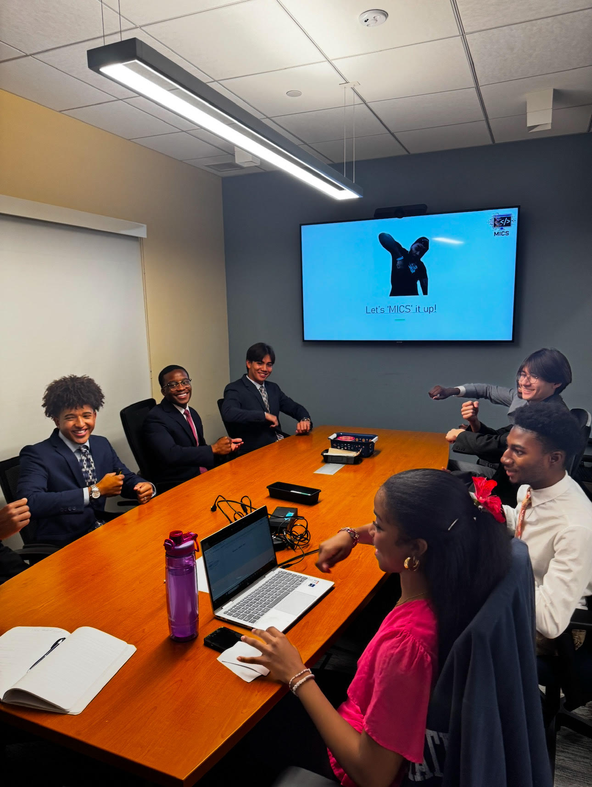
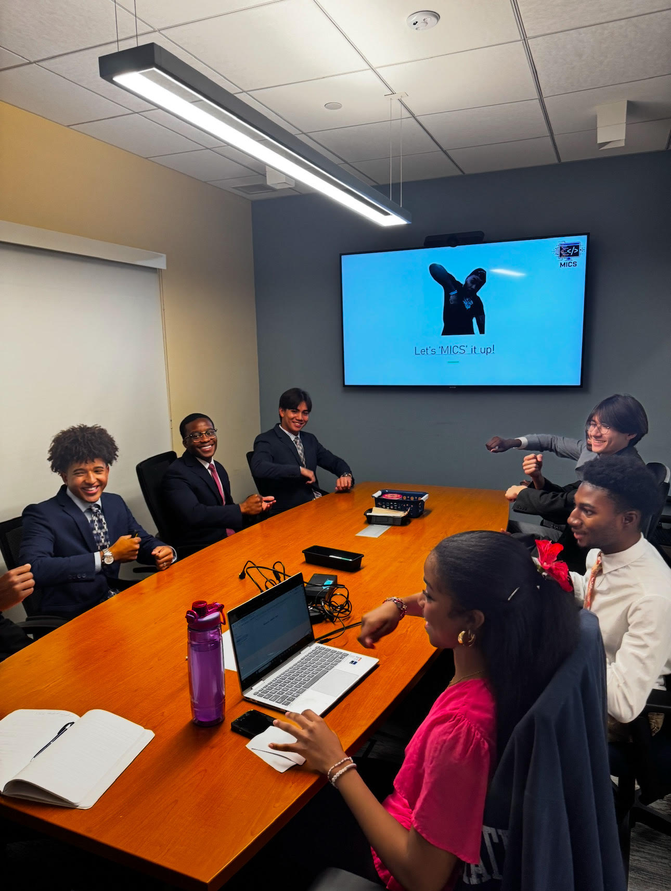

How I Relate with People
 

In my first year of college, I took an online introductory computer science course. Although the course was interesting, I quickly realized that it lacked something in particular: a community. Many students, including myself, felt disconnected, especially if they were minorities in computer science.
To address this, I helped start a club called Multicultural Innovators in Computer Science. The club's objective was simple: to put together a place where students of different backgrounds could meet up, share their experiences, and support one another in their journeys into computer science. We wanted to bridge the gap that often exists in STEM fields and make sure everyone feels included and empowered.
We quickly became part of the diversity roundtable at our university and plan to expand to other universities as well!